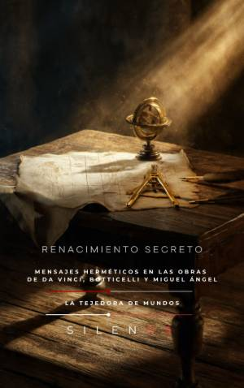

Illuminati
RENACIMIENTO SECRETO : Mensajes herméticos en las obras de Da Vinci, Botticelli y Miguel Ángel
Sinopsis
¿Y si las obras maestras que creías conocer esconden secretos que han permanecido en la sombra durante siglos? Renacimiento Secreto no es solo un libro de historia del arte; es una llave maestra para descifrar los mensajes herméticos, alquímicos y teológicos que genios como Leonardo da Vinci, Sandro Botticelli y Miguel Ángel plasmaron en sus lienzos y frescos. En una época de tensiones entre la fe dogmática y el despertar del conocimiento antiguo, estos artistas utilizaron el lenguaje cifrado de la belleza para transmitir una sabiduría prohibida. ¿Qué encontrarás en este libro? La Primavera de Botticelli como talismán: Explora cómo esta obra maestra fue concebida como un dispositivo de contemplación y un mapa de la psique humana, cargado de simbolismo botánico y magia natural. El lenguaje invisible de Leonardo: Desvela al "geómetra de lo invisible". Entiende por qué sus disecciones anatómicas eran ritos de conocimiento y cómo sus pinturas actúan como puertas de iniciación. Miguel Ángel y la cábala en la Sixtina: Descubre las redes discretas de los Spirituali y cómo el David o la Capilla Sixtina ocultan una lucha épica entre la materia y el espíritu, integrando incluso conocimientos neuroanatómicos sorprendentes para su tiempo. La Academia Platónica de Florencia: Sumérgete en el laboratorio de almas de Marsilio Ficino y el mecenazgo de los Médici, quienes buscaron en el hermetismo una legitimidad que trascendiera el oro. Un puente entre el pasado y la neurociencia moderna A diferencia de otros tratados, esta obra conecta la Prisca Theologia (la sabiduría antigua) con la modernidad. Analiza cómo las técnicas de asombro y el uso de la luz y la proporción en el Renacimiento buscaban alterar la conciencia del espectador, un fenómeno que hoy empezamos a comprender a través de la neurociencia contemplativa. Este libro es para ti si: Te apasiona la historia oculta, el esoterismo y el simbolismo. Buscas una mirada profunda y rigurosa sobre el arte renacentista. Quieres entender cómo la belleza puede ser utilizada como una herramienta de transformación ética y espiritual. Abre estas páginas y aprende a mirar de nuevo. El Renacimiento todavía tiene secretos que revelarte.